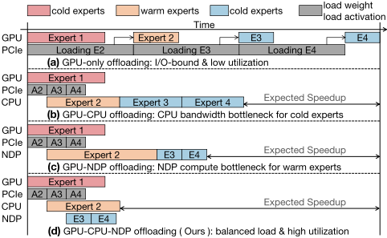
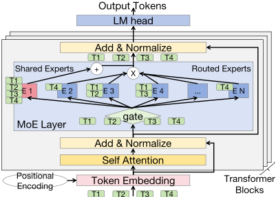
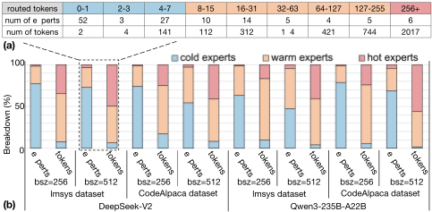
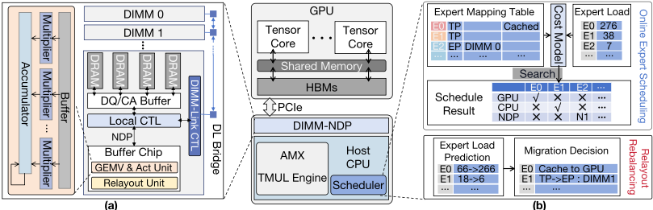
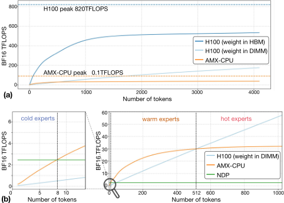
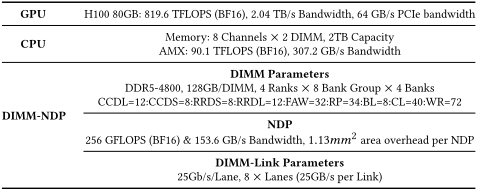
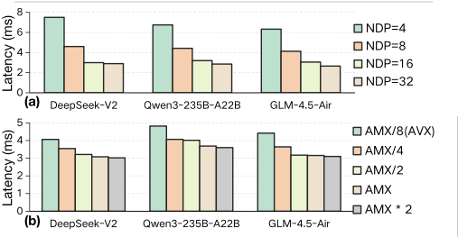

TriMoE：以 AMX-enabled CPU 与 DIMM-NDP 增强 GPU，经卸载实现高吞吐 MoE 推理
MoE 模型总参数远超单 GPU 显存，卸载式单卡推理受 PCIe 瓶颈支配，而现有 GPU-NDP 方案把所有非热 expert 视为同质访存受限负载；实测 20%-40% 的 warm expert 承载约 70% 的 token，落在 GPU I/O 与 NDP 算力之间的空隙。TriMoE 提出 GPU-CPU-NDP 三域架构：热 expert 留在 GPU，warm expert 映射到 AMX-enabled CPU，冷 expert 卸载到置于 DIMM Buffer Chip 的 NDP 单元，并配套 bottleneck-aware 贪心 makespan 调度与 EMA 预测驱动的 relayout/rebalancing（经 host-free 的 DIMM-Link 迁移）。NDP 的 GEMV&ActUnit 以 RTL 实现并在 TSMC 7nm 综合，评估基于 H100 + Xeon 8470 原型与 Ramulator 2.0 cycle-accurate 仿真。结果显示 MoE decode 平均加速 2.12-2.83×、端到端吞吐最高 2.78×，三域平均利用率 76.2%，在线迁移开销低于 3.3%；其 DIMM-NDP 微架构与布局/争用建模对团队 DDR5/MRDIMM 方向有架构参考价值。
MoE 模型总参数量远超单 GPU 显存，必须将 expert 权重卸载到 host 内存，PCIe 带宽成为端到端延迟主导瓶颈；现有 GPU-NDP 卸载系统假设所有非热 expert 是同质的访存受限负载，但高吞吐场景下 20%-40% 的 warm expert 承载多达 70% 的 token：映射到 GPU 时 token 数不足、计算时间过短无法掩盖 PCIe 传输延迟（GPU 利用率跌破 8.6%），映射到 NDP 又超出其算力预算（NDP 执行时间增加 7×），形成 GPU 与 NDP 之间的算力空隙（compute gap）。
提出 TriMoE 三域异构架构：GPU 服务热 expert（MLP/Attention/共享 expert），AMX-enabled CPU（如 Intel Xeon Sapphire Rapids）专职 warm expert 以绕开 PCIe 瓶颈，DIMM-NDP（置于 DIMM Buffer Chip 的 center-buffer 型 NDP，含 256 个 bit-serial 乘法器的 GEMV 单元、多级 adder tree、256KB buffer 与 SiLU 激活模块）处理长尾冷 expert；NDP 单元以 RTL 实现并用 Synopsys Design Compiler 在 TSMC 7nm 综合。配套两项策略：(1) Bottleneck-Aware Greedy Makespan 调度：基于离线 profile 的 GPU/CPU cost lookup table 与考虑 DIMM 访存争用（host 读取与 NDP 计算共存）的 makespan 模型，先贪心分配再迭代瓶颈修正；(2) Prediction-Driven Relayout/Rebalancing：EMA（α=0.3）专家负载预测器驱动热 expert 预取、striped/localized 布局转换与冷 expert 跨 DIMM 负载均衡，迁移经 25 GB/s host-free 的 DIMM-Link 由 Relayout Unit 执行并隐藏在 GPU 计算窗口内。
MoE decode 层相对最强 baseline 平均加速 2.12-2.83×（跨 DeepSeek-V2、Qwen3-235B-A22B、GLM-4.5-Air 三个模型），摘要与结论给出最高 2.83×
端到端吞吐相对最强 baseline 分别提升 2.78×、2.22×、2.09×（三个模型）
三计算域平均利用率 76.2%（Table 3：TriMoE GPU 66.0%、CPU 74.9%、NDP 87.8%），对比 Klotski GPU 利用率仅 28.6%
消融实验：引入 AMX-CPU + 贪心调度贡献 1.75×，Bottleneck-Aware Refinement 再贡献 1.28×，Prediction-Driven Relayout 再贡献 1.16×
Expert Load Predictor 迁移决策准确率 78%（超过 78%），元数据开销仅 38 KB，带来 1.16× 端到端收益
小 batch 鲁棒性：bsz=128/64/32 下相对最强 baseline 加速 2.72×/2.18×/1.82×
在线迁移开销：迁移最多 4 个 expert 约 0.63 ms，被约 0.68 ms 的并发 GPU 计算掩盖，整体在线迁移开销低于 3.3%
DIMM-Link 提供 25 GB/s 无 host 参与的跨 DIMM 传输，比 CPU 驱动数据搬运高效 62× 以上
敏感性分析：NDP DIMM 数量达 16 后延迟趋于稳定；CPU 算力达 0.5× AMX baseline 后延迟曲线明显趋平
区别于 GPU-only 预取（Klotski）、GPU-CPU（Enhanced KTransformers）与二元 GPU-NDP 划分（MoNDE），本文首次指出非热 expert 并非同质访存受限群体，识别出 warm expert 造成的 GPU-NDP 算力空隙，并重新评估被忽视的 AMX-enabled CPU（10-40 TFLOPS）作为第三计算域填补该空隙；同时提出跨三域、考虑 DIMM 访存争用的 bottleneck-aware makespan 调度，以及用 host-free DIMM-Link 迁移同时化解布局偏好冲突（CPU/GPU 偏好 striped vs NDP 要求 localized）与 NDP 负载倾斜的预测驱动 relayout/rebalancing 机制。
相关度级别：medium
命中能力域：2.1 IP 架构与微架构 | 2.2 RTL 设计与实现
理由：论文主体是 MoE 推理系统的卸载调度与负载预测算法，不属于团队协议 IP 设计与验证交付的核心工程场景。但其 DIMM-NDP 部分与团队 DDR5/MRDIMM 产品线有实质关联：Buffer Chip 上放置 NDP 单元并与常规内存访问兼容的架构权衡（对比 bank-level NDP 的面积开销）、striped 与 localized 布局偏好冲突、DIMM 同时服务 host 读取与 NDP 计算的争用建模、DIMM-Link 跨 DIMM 迁移，均属 2.1 内存 IP 架构层面的直接参考；NDP 单元以 RTL 实现并用 Design Compiler 在 TSMC 7nm 综合，轻量触及 2.2。论文未涉及 UVM/形式验证、时序 sign-off 等团队核心交付能力，故评为 medium 而非 high。
建议动作：作为方法参考存档
arXiv:2603.01058v1 [cs.AR] 2026年3月1日
Yudong Pan 1 2 , Yintao He 1 2 , Tianhua Han 1 2 , Lian Liu 1 2 , Shixin Zhao 1 2 , Zhirong Chen 1 2 , Mengdi
Wang 1 , , Cangyuan Li 1 , , Yinhe Han 1 , , Ying Wang 1 , ,
, , , , , , 2 2 2 2 †
1 处理器芯片全国重点实验室（SKLP），中国科学院计算技术研究所，中国北京
2 中国科学院大学，中国北京
panyudong23@mails.ucas.ac.cn,heyintao19z@ict.ac.cn,wangying2009@ict.ac.cn

这一分析促使我们重新审视主机侧的计算选项。尽管 GPU-CPU 系统历来被视为性能受限，但我们认为，这是由于将 CPU 错误地分配给了带宽密集型的冷专家。相比之下，配备矩阵扩展（例如 Intel AMX 和 ARM SME）的现代服务器 CPU 可提供数十 TFLOPS 的算力 [2, 17]，恰好匹配温专家的计算特征。与此同时，DIMM-NDP 仍是冷专家的理想选择，其可利用比主机内存系统高 4-8 倍的高聚合内部带宽 [22, 23]。
因此，我们提出了 TriMoE——一种单 GPU、高吞吐量的混合专家（MoE）推理架构，它以独特的方式在单一系统内编排三个异构计算域。TriMoE 将热专家（例如共享专家）保留在 GPU 上以发挥峰值吞吐量；将温专家映射到支持 AMX 的 CPU 上，以绕过 PCIe 瓶颈并匹配计算需求；并将长尾冷专家卸载到 DIMM-NDP 引擎上，以利用其高内部带宽。这种分层设计有效地使 GPU 免受 PCIe 拥塞的影响，并使 CPU 免于承担访存受限的任务，从而确保每个计算域都专注于其处理效率最高的工作负载。
简而言之，我们的贡献如下：
为了以高性价比的方式部署大型混合专家（MoE）模型，基于卸载的单GPU异构推理至关重要。在卸载冷专家的GPU-CPU架构受限于主机内存带宽的同时，新兴的GPU-NDP架构则利用DIMM-NDP来卸载非热专家。然而，非热专家并非一个同质的访存受限群体：其中存在相当一部分温专家，它们因高昂的GPU I/O延迟而受到严重拖累，却能使NDP的计算吞吐量饱和，从而暴露出一个关键的计算鸿沟。我们提出TriMoE，一种新颖的GPU-CPU-NDP架构，它通过协同利用支持AMX的CPU，将热专家、温专家和冷专家精确映射到各自最优的计算单元上，从而填补这一鸿沟。我们进一步引入了瓶颈感知的专家调度策略和预测驱动的动态重布局/再平衡方案。实验表明，TriMoE相比最先进的解决方案可实现高达 2.83× 的加速。
混合专家（MoE）模型通过为每个词元稀疏地激活一小组专家，改善了大语言模型（LLM）的效率-质量权衡 [13, 20]。然而，数百个专家的总参数量远超单块高端 GPU 的显存容量 [7, 29]。例如，服务 DeepSeek-V2 至少需要七块 80GB 的 H100 GPU [9]，成本约为 20 万美元。这使得将专家卸载到主机内存对于单 GPU 服务而言至关重要。
在 MoE 卸载系统中，端到端延迟往往由通过 PCIe 获取 GPU 之外专家权重的数据搬运所主导，而非纯计算。如图 1 所示，先前的工作因此从仅依赖 GPU 的预取演进到异构设计 [14]。由于 GPU-CPU 方法受限于主机内存带宽，当前系统更青睐 GPU-NDP [18]，后者利用路由稀疏性，将热专家保留在 GPU 上，而将低负载、访存受限的专家卸载到 NDP 引擎。
通过重新审视高吞吐量工作负载（例如离线 [29] 或 zigzag 批处理 [9]）下的专家激活情况，我们发现非热专家并非同质。除了少量热专家和长尾的冷专家之外，还有 30% 的专家属于温专家（也称中等强度）。将温专家映射到 GPU 上，每个专家分得的词元数量不足以实现高利用率，且无法与 PCIe 传输重叠；将它们映射到 NDP 则会超出有限的近数据计算预算，抵消卸载冷专家带来的收益。因此，这种将所有非热专家归为单一类别的二元 GPU-NDP 划分范式难以奏效。
† 通讯作者

混合专家（Mixture-of-Experts，MoE）模型通过稀疏激活专家子集，在计算成本不随之线性增加的情况下扩展参数数量 [13, 20, 21, 31]。如图 2 所示，MoE 层用一个门控函数和 N 个并行专家取代了标准前馈层。在推理过程中，门控函数为每个输入词元计算其分配到每个专家的概率，并选出 top-k 个专家进行处理。这 k 个专家的输出随后通过加权和组合成该词元的最终输出，再传递给后续层。在实际应用中，专家总数（N）通常在数十到数百之间，而激活的专家数量（K）通常是一个较小的整数。此外，DeepSeek [20] 等现代架构同时引入了共享专家和路由专家。例如，DeepSeek V2 使用 2 个由所有词元激活的共享专家，以及 160 个路由专家，并通过 top-k 门控从中选出 6 个。这种混合设计使模型能够在参数规模与计算成本之间取得良好的平衡。
由于稀疏架构，混合专家（MoE）模型通常具有庞大的参数规模，因而往往需要代价高昂的多 GPU 部署。基于卸载（offloading）的推理系统已成为一种高性价比的单 GPU 解决方案 [26, 30]，其利用主机内存来存储大部分（>90%）专家权重。然而，PCIe 总线（PCIe 5.0 为 64 GB/s）会造成严重的 I/O 瓶颈，因为其带宽落后于 GPU 的计算能力。因此，最先进（SOTA）的卸载系统面向高吞吐量场景（离线批处理或 zigzag 批处理），以摊销 I/O 开销 [9, 29]。为了在专家激活高度倾斜的解码阶段尽量减少专家数据的搬运，相关设计已从预取（prefetching）演进为异构计算范式。热点专家常驻于 GPU 上，而其他非热点专家则在主机上利用其可用的计算资源执行 [14, 37]。由于异构 GPU-CPU 系统仍受主机内存带宽的制约，日益增长的趋势是采用 DIMM 近数据处理（DIMM-NDP）[18, 22]。例如，rank 级处理单元（PU）利用比主机高 4-8× 的聚合内部带宽在数据近旁处理专家 [23]，从而缓解 I/O 瓶颈并提升吞吐量。相反，在预填充（prefill）阶段，专家被广泛激活，GPU 计算在很大程度上掩盖了 I/O 开销。

最先进（SOTA）的 GPU-NDP 系统假设所有非热门专家构成一个均匀的、受内存带宽限制、适合由 DIMM-NDP 处理的子集 [18, 28]。然而，我们的分析表明这种假设过于简化。如图 3 所示，一项跨越多个代表性 MoE 模型和真实数据集的激活研究揭示了非热门专家之间的显著异质性：长尾的冷专家占全部专家的 70% 以上，却仅处理 8% 的 token，而 20%-40% 的温专家则处理多达 70% 的 token。这种异质性给 GPU-NDP 带来了调度困境：(1) GPU 侧 I/O 瓶颈。这一瓶颈是双重的。首先，如图 5(a) 所示，即使专家驻留在 HBM 中，H100 GPU 也需要每个专家至少 256 个 token 才能达到 30% 的利用率。温专家远低于这一阈值。更关键的是，这些未驻留的温专家必须经由 PCIe 取回，其 token 数量少，使得计算时间过短，无法与可观的 I/O 延迟相重叠，从而迫使 GPU 停顿。因此，GPU 的整体利用率降至 8.6% 以下。(2) NDP 侧计算瓶颈。将温专家调度到 NDP 上执行会超出其计算预算，使 NDP 执行时间增加 7×，抵消了冷专家卸载所带来的收益。
1 此处的“批大小”（batch size）指离线的大批量推理，或指将多个小批次聚合起来的之字形批处理（zigzag batching）。

(a)
(b)

本节详细介绍 TriMoE 的设计与实现。我们首先介绍总体架构（第 4.1 节），随后介绍应对上述挑战的两项新颖策略：瓶颈感知的贪心完工时间专家调度（BottleneckAware Greedy Makespan Expert Scheduling）（第 4.2 节）以及预测驱动的专家重布局与再均衡（Prediction-Driven Expert Relayout and Rebalancing）（第 4.3 节）。
调度器：调度器统筹协调所有异构资源，执行在线专家调度以及动态的专家重布局与再均衡，具体内容将在后续章节中详述。
在 TriMoE 的三路异构平台上进行调度极具挑战性。虽然将专家映射到其最适配设备这一做法旨在最大化资源利用率，但这种简单的理论最优策略可能造成全局瓶颈。关键在于在全部三个域之间均衡负载，以最小化全局完工时间（makespan）。我们提出一种两阶段调度策略：首先执行基于代价模型的贪心式初始分配，随后进行迭代的瓶颈感知细化，以优化最终的完工时间。
专家执行代价模型：第一步是估计任意专家 𝐸 𝑖 在所有可能路径上的执行代价，并选出最合适的一条。如图 4(b) 所示，该代价模型依赖两个运行时输入：来自门控函数的专家负载（token 数量）𝐿 𝑖，以及专家的映射与数据布局，二者统称为 𝑀 𝑖。为准确建模计算延迟，我们针对不同 token 数量对 GPU 和 CPU 进行离线剖析，为 𝑓 𝑐𝑎𝑙𝑐 _ 𝑔𝑝𝑢 ( 𝐿 𝑖 ) 和 𝑓 𝑐𝑎𝑙𝑐 _ 𝑐𝑝𝑢 ( 𝐿 𝑖 ) 构建查找表 [16]。
1) GPU 执行代价：我们评估两条路径。公式 1 建模缓存命中情形，此时专家驻留在 GPU 的高带宽内存（HBM）中，代价主要由计算主导。公式 2 表示缓存缺失情形，需要从主机按需加载。其代价由 GPU 计算、PCIe 权重传输以及主机 DIMM 权重读取（𝑇 𝐷𝑅𝐴𝑀）共同决定。𝑇 𝐷𝑅𝐴𝑀 时间取决于专家的权重布局（𝑀 𝑖）：该布局要么是条带化（striped）的，可访问全部内存带宽；要么是本地化（localized）的，仅访问单条 DIMM 的带宽。
2) CPU 执行代价：对于 AMX-CPU，其代价取其计算时间与 DIMM 权重读取时间（𝑇 𝐷𝑅𝐴𝑀）二者中的最大值，因为 𝑇 𝐷𝑅𝐴𝑀 同样依赖于专家的布局。
3) NDP 执行代价：与集中式的 GPU 和 CPU 不同，DIMM-NDP 单元并行工作。我们将该路径严格限定于具有本地化布局的专家，以避免跨多条 DIMM 进行输入广播和结果归约所带来的高昂开销。因此，专家 𝐸 𝑖 只能在其权重所驻留的那条特定 DIMM 上执行。其代价取 NDP 计算与使用 DIMM 内部带宽读取权重的时间二者中的最大值。
整体完工时间建模：在完成初始专家分配后，我们通过汇总各计算域内的代价来对全局完工时间进行建模。设 S 𝐺𝑃𝑈、S 𝐶𝑃𝑈 和 S 𝑑 𝑁𝐷𝑃 分别表示分配给 GPU、CPU 以及第 𝑑 个 DIM
相比之下，DIMM-NDP 单元是并行工作的，因此 NDP 域的延迟由瓶颈 DIMM 决定。关键在于，我们的模型考虑了内存访问争用：DIMM 不仅在执行本地 NDP 计算时处于忙碌状态，在响应来自 GPU 或 CPU 的权重获取请求时同样忙碌。DIMM 𝑑 的总活跃时间为：
其中，𝑇 𝑑 𝑐𝑜𝑛𝑡𝑒𝑛𝑡𝑖𝑜𝑛 表示由主机处理器针对 DIMM 𝑑 进行条带化或本地化权重读取所累积的 DRAM 访问延迟。全局完工时间最终由三个域中最慢者决定：
瓶颈感知细化（Bottleneck-Aware Refinement）：初始的专家分配可能造成全局负载不均衡，因此算法进入一个迭代的瓶颈修正阶段。在每次迭代中，算法首先识别出瓶颈设备（即总时间最大的设备），并选择该瓶颈设备上开销最高的专家作为迁移候选。随后，算法评估将该专家重新分配到另外两个设备的方案，并为每个潜在迁移建模新的全局完工时间。算法贪心地选择能带来最小新全局完工时间的迁移方案。若两种迁移方案得到相同的新完工时间，算法则通过选择使接收设备上时间增量（delta）最小的方案来打破平局。这一迭代细化过程持续进行，直到没有任何重新分配能进一步降低全局完工时间，或达到最大迭代次数上限为止。
在线专家调度的有效性受限于专家权重的放置方式。尽管我们通过离线轨迹分析设置了优化的初始布局（例如，将冷专家局部化到单个 DIMM 上），但由于专家激活的动态性，这种静态放置在运行时会变得次优 [11, 32]。这导致了两个核心问题。第一，布局偏好冲突（Layout Preference Conflict）会随之出现，因为专家的身份可能发生变化。例如，一个冷专家可能变为温专家，从而与 CPU 偏好的条带化布局产生不匹配。第二，当冷专家在各 DIMM 间的激活不均匀、导致某些 DIMM-NDP 过载时，就会发生 NDP 负载不均衡（NDP Load Imbalance），形成瓶颈。为解决这些问题，我们设计了一种预测驱动的策略，利用专家激活的时间局部性来执行异步重布局与再均衡 [8, 30]。
专家负载预测器（Expert Load Predictor）：如图 4(b) 所示，我们引入了一个轻量级的专家负载预测器。该预测器为每个专家的负载维护一个指数移动平均（Exponential Moving Average，EMA）[10, 34]，并在每个解码步骤之后进行更新：
其中 𝐹 𝑒 ( 𝑡 ) 为该专家在第 𝑡 步的实际负载，𝛼 = 0 . 3 为经验调优所得，用于在抑制噪声的同时预测专家的负载趋势，从而获得 >78% 的准确率。
专家迁移决策（Expert Migration Decision）：当某一层的专家计算完成时，预测器会估计下一层的负载趋势，并触发三类后台操作。(1) 热专家预取（Hot Expert Prefetching）：如果某个专家被预测为热专家，运行时系统会触发一个高优先级任务，通过 PCIe 将其权重预取到 GPU HBM 中。(2) 动态重布局（Dynamic Relayout）：如果某个专家的布局与其最优执行单元不匹配，重布局单元（Relayout Unit）会使用 DIMM-Link 在局部化布局与条带化布局之间转换其数据布局。(3) 冷专家再均衡（Cold Expert Rebalancing）：为解决 NDP 负载不均衡问题，系统会计算每个 DIMM 上冷专家的预测负载总量。如果检测到负载偏斜，系统会通过 DIMM-Link 贪心地从最繁忙的 DIMM 逐个选择冷专家并将其迁移到最空闲的 DIMM。这些迁移的开销旨在被隐藏在当前层在 GPU 上的 MLP 与 Attention 计算所提供的重叠窗口内。我们的策略按预测收益对所有可行的迁移任务进行排序，并按优先级顺序贪心地执行它们，直到其累计估计时间填满该窗口预算为止。这确保了有限的 DIMM-Link 带宽被用于最关键的任务。
我们的评估表明，该预测器仅以 38 KB 的内存开销存储必要的元数据，即可实现 78% 的迁移决策准确率，并带来 1.16 × 的端到端性能提升。
5.1.1 TriMoE 系统。为评估 TriMoE，我们搭建了一个异构原型系统，其中包含一块配备 80GB 高带宽内存（HBM）的 NVIDIA H100 PCIe GPU、一颗支持 AMX 的 Intel Xeon Platinum 8470 CPU（8 通道内存），以及 16 个可提供高内部带宽的 DIMM-NDP。详细配置列于表 1。我们利用 PCIe 5.0 为主机到 GPU 的数据传输提供 64GB/s 的单向带宽。在软件栈方面，我们采用 vLLM 0.8.1 [19] 与 KTransformers [2] 分别为 GPU 和 AMX-CPU 实现高效内核。我们基于 Ramulator 2.0 [24] 开发了一个周期精确（cycle-accurate）的模拟器来评估 DIMM-NDP 性能。对于 NDP 单元，我们使用寄存器传输级（RTL）对其进行实现，并采用 Synopsys Design Compiler [27] 基于台积电（TSMC）7nm 工艺完成综合。

5.1.2 基线。我们将 TriMoE 与三种最先进（SOTA）的 MoE 卸载系统进行比较。(1) Klotski [9]：GPU-Only。该基线通过预取热门专家并在热门专家计算期间加载冷门专家权重来最大化 PCIe 重叠；(2) Enhanced Ktransformer [2]：GPU-CPU。在其使用 AMX-CPU 处理所有非共享专家的基础上，我们增加了对热门专家的预取与按需加载，使其成为该架构下最强的基线 [37]；(3) MoNDE [18]：GPU-NDP。该系统通过建模权重迁移（迁移至 GPU）与激活迁移（迁移至 NDP）之间的成本权衡，来平衡 GPU 与 NDP 之间的负载。
5.1.3 工作负载与指标。我们选取了三种具有代表性的现代 MoE 模型（其详细规格见表 2），并使用 LMSys [36] 和 CodeAlpaca [12] 数据集提取真实的专家激活轨迹以构建工作负载。由于卸载系统主要面向高吞吐量需求 [29]，我们聚焦于通过 zigzag 或离线批处理聚合而成的 256-768 大批量规模，并辅以针对小批量的鲁棒性评估。鉴于 MoE 解码阶段占推理时间的 90% 以上，我们将 MoE 层延迟和端到端吞吐量作为核心指标进行报告。
| Model | params | shared exp | routed exp | top- 𝑘 | expert params |
|---|---|---|---|---|---|
| DeepSeek-V2 [20] | 236B | 2 | 160 | 6 | 422GB |
| Qwen3-235B-A22B [31] | 235B | 0 | 128 | 8 | 423GB |
| GLM-4.5-Air [33] | 106B | 1 | 128 | 8 | 190GB |
| Model | params | shared exp | routed exp | top- 𝑘 | expert params |
如图 8 所示，我们通过消融实验量化各组件的贡献，实验从 GPU-NDP 基线出发。首先，引入采用贪心调度的 AMX-CPU（+CPU）带来了最显著的 1.75 × 加速。这验证了我们的假设：AMX-CPU 能够有效处理热专家（warm experts），打破了 GPU I/O 与 NDP 计算瓶颈之间的僵局。其次，启用 Bottleneck-Aware Refinement（+Refinement）进一步带来 1.28 × 的增益，证实该算法能够纠正贪心映射的不均衡，从而最小化全局完工时间（makespan）。最后，Prediction-Driven Relayout and Rebalancing（+Relayout）又带来了 1.16 ×
归一化加速比
2.5
1.5
0.5
GPU-NDP
+CPU
+Refinement
+Relayout
1.29 X
1.87 X
1.13 X
1.30 X
1.79 X
1.24 X
1.57 X
图 8：批大小为 512 时 TriMoE 的消融实验。

的提升。凭借超过 78% 的预测器准确率，该机制成功解决了由动态激活引起的运行时布局冲突和 NDP 负载偏斜，确保系统效率得以持续。
5.4.1 NDP 数量。图 9(a) 改变了配备 NDP 的 DIMM 数量。延迟在 16 个单元之后趋于稳定。这反映了一个关键的工作负载特性：冷专家虽然数量众多，但总体计算密度较低。因此，全 NDP 配置即可提供足够的带宽来处理所有冷专家。
5.4.2 CPU 计算能力。图 9(b) 将 CPU 算力从传统 AVX 水平（≈ 0.125 ×）扫描至 2.0 × AMX。尽管 AVX 水平表现出更高的延迟，但当算力达到 AMX 基线的 0.5 × 时，曲线显著趋于平缓。这证实了现代 AMX 扩展提供了足够的计算能力，使得即使是中端 CPU 也能有效弥合温专家差距。
为了评估鲁棒性，我们使用 Qwen 模型在批大小为 128、64 和 32 的条件下进行测试，TriMoE 相对于最强基线分别保持了 2.72 ×、2.18 × 和 1.82 × 的加速比，证实了其在不同吞吐量需求下的有效性。我们还分析了运行时开销。借助 DIMM-Link 无需主机参与的并行跨 DIMM 传输能力，我们发现迁移最多四个专家所需的约 0.63 ms 开销完全被约 0.68 ms 的并发 GPU 计算所掩盖。鉴于预测器准确率超过 78%（这使得如此大规模的传输并不频繁），实测的总体在线迁移开销仍被限制在 3.3% 以下。
TriMoE 从专家异构性的视角重新审视了 MoE 卸载问题，并揭示了二元 GPU-NDP 设计在处理温专家方面的根本性低效。通过联合利用 GPU 处理热专家、支持 AMX 的 CPU 处理温专家、以及 DIMM-NDP 处理冷专家，TriMoE 将每一类专家匹配到其最合适的计算域。结合我们的瓶颈感知调度以及预测驱动的重布局与再均衡机制，这一三域架构相比最先进的卸载系统实现了高达 2.83 × 的加速比。
1 条证据未在原文中核对到